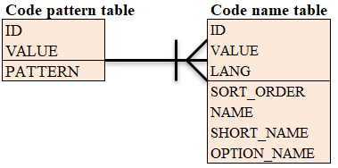
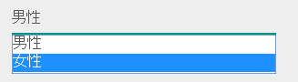
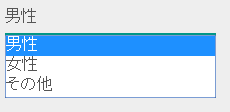
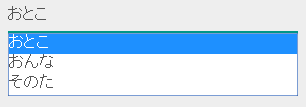

7.13. Code Management¶
Table of contents
- Function overview
- Module list
- How to use
- Initial configuration to use the code value management function
- Switch code information used for each function
- Support for multilingualization of names
- Define the sort order of names to be displayed on the screen
- Define names other than names and abbreviations
- Check if the input value is a valid code value
Provides a function that manages mapping with the values and names used in the application.
For example, manages the mapping information of gender classification and display name given below.
| Value | Name | Abbreviation |
|---|---|---|
| male | Male | M |
| female | Female | F |
Important
This function manages the static code information (mapping between value and name) and information whose value is dynamically changed, such as “product code” or “company code” is excluded. Such information should be managed by creating a master table in the application.
Important
When this function is used, RDBMS referential integrity constraint cannot be configured for the table with code name and table with code value. Use Check if the input value is a valid code value to check such constraints.
Tip
Static code information should be represented by enum for the following reasons.
- If a simple mapping is required between the value and name, code definition using database is complex and maintenance cost is high.
- In the case of code definition using database, double maintenance occurs because the numeric constants for handling code values are often defined in Java.
However, Nablarch does not have the function of mutual conversion between the enum value and database value, and the enum value cannot be registered in the database.
The value of enum can be registered in the database by using Doma. When using Doma, configure by referring to Doma Adapter .
7.13.1. Function overview¶
7.13.1.1. Can handle internationalization¶
This function can manage names for each language.
For details, see Support for multilingualization of names .
7.13.1.2. Manage code information in a table¶
This function manages value and name information in a database. Therefore, create a table in the database in advance and register static code information on the table.
For details, see Initial configuration to use the code value management function .
7.13.2. Module list¶
<dependency>
<groupId>com.nablarch.framework</groupId>
<artifactId>nablarch-common-code</artifactId>
</dependency>
<dependency>
<groupId>com.nablarch.framework</groupId>
<artifactId>nablarch-common-code-jdbc</artifactId>
</dependency>
7.13.3. How to use¶
7.13.3.1. Initial configuration to use the code value management function¶
To use this function, create a table to manage the code and configure the information in a configuration file.
The table structure and configuration examples are shown below.
- Table structure
Code information uses two tables, a
code pattern tableand acode name table. The relationship between the two tables is as follows.The usage of each column is as follows.
ID: ID for uniquely identifying code information
Configure a unique ID for each gender or mailing address category.
VALUE: Value that identifies the name in the code information
For gender classification, the value will be
maleorfemale.PATTERN: Flag whether to use the value (set to
0or1)Use to switch valid values. Can be omitted if not required.
For details, see Switch code information used for each function .
LANG: Language
When supporting multilingualization, store Local#getLanguage() of the supported language.
Configure
jaif only Japanese is supportedSORT_ORDER: Sort order
When list information associated with ID is obtained, results are returned in ascending order of the values set in this column.
For details, see Define the sort order of names to be displayed on the screen .
NAME: Name
Configure the name corresponding to VALUE.
SHORT_NAME: Abbreviation
Configure the abbreviation corresponding to VALUE.
OPTIONAL_NAME: Option name
Used when the value of the displayed text cannot be managed with only the name and abbreviation. The required number of column names and columns can be defined.
For details, see Define names other than names and abbreviations .
- Configuration file example
An example of configuration file when using code management is shown below.
- Point
- Set the component name of BasicCodeManager to codeManager .
- Refer to Control the cache timing of data for configuration value of loadOnStartup of BasicStaticDataCache .
- Configure BasicStaticDataCache in the list of initialization targets as it needs to be initialized.
<component name="codeLoader" class="nablarch.common.code.BasicCodeLoader"> <!-- Schema information of code pattern table --> <property name="codePatternSchema"> <component class="nablarch.common.code.schema.CodePatternSchema"> <!-- Configure the table name and column name in CodePatternSchema property. --> </component> </property> <!-- Schema information of code name table--> <property name="codeNameSchema"> <component class="nablarch.common.code.schema.CodeNameSchema"> <!-- Configure table name and column name in CodeNameSchema property. --> </component> </property> </component> <!-- Configuration for caching the information acquired from the database --> <component name="codeCache" class="nablarch.core.cache.BasicStaticDataCache" > <property name="loader" ref="codeLoader"/> <property name="loadOnStartup" value="false"/> </component> <!-- Configure the class that caches the information acquired from the database in BasicCodeManager --> <component name="codeManager" class="nablarch.common.code.BasicCodeManager" > <property name="codeDefinitionCache" ref="codeCache"/> </component> <!-- Configure BasicStaticDataCache in the initialization list as it requires to be initialized --> <component name="initializer" class="nablarch.core.repository.initialization.BasicApplicationInitializer"> <property name="initializeList"> <list> <component-ref name="codeCache"/> </list> </property> </component>
7.13.3.2. Switch code information used for each function¶
When listing code information, switching between display/non-display for each function may be required. In such a case, the pattern of the code pattern table is used to switch which pattern of information is displayed for each function.
An example is shown below.
- Define pattern column in the code pattern table
Define a pattern column that has a display pattern in the code pattern table.
Pattern column can be used by configuring CodePatternSchema.patternColumnNames . For configuring the configuration file, see Initial configuration to use the code value management function .
In this example, two patterns
PATTERN1andPATTERN2are defined, and OTHER is hidden inPATTERN2.- code pattern table
ID VALUE PATTERN1 PATTERN2 GENDER MALE 1 1 GENDER FEMALE 1 1 GENDER OTHER 1 0 - code name table
ID VALUE LANG SORT_ORDER NAME SHORT_NAME GENDER MALE ja 1 男性 男 GENDER FEMALE ja 2 女性 女 GENDER OTHER ja 3 その他 他
- Specify the pattern and acquire the code information
- CodeUtil is used to acquire the code name.
When using a pattern, specify which pattern to use with a character string. This value must exactly match the column name configured in the configuration file with Initial configuration to use the code value management function .
// Acquire the PATTER1 list. // [MALE, FEMALE, OTHER] can be acquired. List<String> pattern1 = CodeUtil.getValues("GENDER", "PATTERN1"); // Acquire PATTER2 list. // [MALE, FEMALE] can be acquired. List<String> pattern2 = CodeUtil.getValues("GENDER", "PATTERN2");
- Specify the pattern on the screen (JSP) and acquire the code information
When a custom tag library that acquires code information is used, only the information of that pattern is displayed by specifying a pattern.
For details on how to use the custom tag library, refer to the following.
Specify PATTERN2 in pattern attribute as shown below.
<n:codeSelect name="form.gender" codeId="GENDER" pattern="PATTERN2" cssClass="form-control" />
Outputs
男性(Male)and女性(Female), which are the targets of PATTERN2.
7.13.3.3. Support for multilingualization of names¶
Prepare data for each supported language in the code name table to support multilingualization of names.
An example is shown below.
- Data of code name table
In this example, 2 languages
jaandenare supported.ID VALUE LANG SORT_ORDER NAME SHORT_NAME GENDER MALE ja 1 男性 男 GENDER FEMALE ja 2 女性 女 GENDER OTHER ja 3 その他 他 GENDER MALE en 1 Male M GENDER FEMALE en 2 Female F GENDER OTHER en 3 Unknown - - Specify the language and get the code information
The name corresponding to the language can be obtained by specifying the language by using CodeUtil .
// Name CodeUtil.getName("GENDER", "MALE", Locale.JAPANESE); // -> 男性 CodeUtil.getName("GENDER", "MALE", Locale.ENGLISH); // -> Male // Abbreviation CodeUtil.getShortName("GENDER", "MALE", Locale.JAPANESE) // -> 男 CodeUtil.getShortName("GENDER", "MALE", Locale.ENGLISH) // -> M
Important
Note that the custom tag library provided for JSP cannot acquire the value by specifying the language. Refer to Display code values for details of the language information used by custom tag library.
7.13.3.4. Define the sort order of names to be displayed on the screen¶
The sort order can be defined when displaying the code information in the list box or check box on the screen. The sort order can be configured for each language as it may be different for each country.
An example is shown below.
- Configure the sort order in SORT_ORDER of code name table
Configure the sort order in SORT_ORDER column of code name table.
In this example, displayed in the order
MALE->FEMALE->OTHER.ID VALUE LANG SORT_ORDER NAME SHORT_NAME GENDER MALE ja 1 男性 男 GENDER FEMALE ja 2 女性 女 GENDER OTHER ja 3 その他 他 - Screen display example
When codeSelect of the custom tag library is used, it is displayed in the order
MALE (男性)->FEMALE (女性)->OTHER (その他)as shown below.
7.13.3.5. Define names other than names and abbreviations¶
Two types of naming can be used in the default behavior, name and abbreviation.
Depending on the requirements, display names other than these may require to be defined. Support such cases by using the option name area.
An example is shown below.
- Define option name column in the code name table
Define a column with an optional name in the code name table.
Pattern column can be used by configuring CodePatternSchema.patternColumnNames . For configuring the configuration file, see Initial configuration to use the code value management function .
In this example, two columns are defined as option name columns,
FORM_NAMEandKANA_NAME.ID VALUE LANG SORT_ORDER NAME SHORT_NAME FORM_NAME KANA_NAME GENDER MALE ja 1 男性 男 Male おとこ GENDER FEMALE ja 2 女性 女 Female おんな GENDER OTHER ja 3 その他 他 Other そのた - Acquire option name
- CodeUtil is used to acquire option name.
When acquiring the option name, specify which option name is to be acquired with a string. This value must exactly match the column name configured in the configuration file with Initial configuration to use the code value management function .
CodeUtil.getOptionalName("GENDER", "MALE", "KANA_NAME") // -> おとこ CodeUtil.getOptionalName("GENDER", "FEMALE", "FORM_NAME", Locale.JAPANESE) // -> Female
- Display optional name on the screen (JSP)
When using a custom tag library, the name can be displayed by specifying an optional name.
For details on how to use the custom tag library, refer to the following.
- code_select
- code
To display the name of KANA_NAME, specify optionColumnName as shown below and specify $OPTIONALNAME$ in labelPattern .
<n:codeSelect name="form.gender" codeId="GENDER" optionColumnName="KANA_NAME" cssClass="form-control" labelPattern="$OPTIONALNAME$"/>
The value of KANA_NAME of the option name is displayed.

7.13.3.6. Check if the input value is a valid code value¶
Provide a function to check whether the input value (request parameter sent from the client in the case of a screen) is within the valid range of code. Input values can be checked with this function only by configuring the annotation.
An example is shown below.
- Bean Validation
To use Bean Validation , use the annotation nablarch.common.code.validator.ee.CodeValue.
@CodeValue(codeId = "GENDER") private String gender;
- Nablarch Validation
To use Nablarch Validation , use the annotation nablarch.common.code.validator.CodeValue.
@CodeValue(codeId = "GENDER") public void setGender(String gender) { this.gender = gender; }
When the value that can be selected is limited by using pattern for the input screen, it is necessary to check whether the values are valid in the pattern even during validation.
Whether the value is valid in the pattern can be checked by specifying the pattern name in the pattern attribute of annotation for validation.
An example is shown below.
@CodeValue(codeId = "GENDER", pattern = "PATTERN2")
private String gender;
Tip
When Domain validation is used, only one pattern can be specified for one domain. Therefore, to support multiple patterns, a domain corresponding to the pattern is required to be defined.
However, it is not necessary to define the domains corresponding to all patterns, only the domains required for validation need to be defined.
An example is shown below.
public class SampleDomainBean {
// Domain for PATTERN1
@CodeValue(codeId = "FLOW_STATUS", pattern = "PATTERN1")
String flowStatusGeneral;
// Domain for PATTERN2
@CodeValue(codeId = "FLOW_STATUS", pattern = "PATTERN2")
String flowStatusGuest;
}